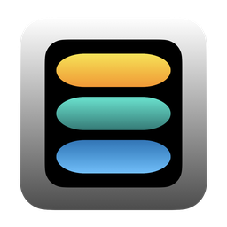

Your apps, folders and bookmarks — plus the weather, your day and a few useful numbers — in one menu, from the Dock icon or the menu bar.
Click Dockter's Dock icon or its menu bar icon — the same menu opens either way. Keep both, or just the one you prefer.
Group your favourite apps into folders you name and colour yourself. A green dot shows what's already running.
Web links, files and folders together. Bookmarked folders can be browsed right in the menu, and links show the site's own icon.
Weather for a city you choose, world clocks, today's events and reminders, exchange rates, free disk space and battery — each one optional, in the order you like.
Running Apps lists what's open, with each app's windows and tabs. Launch Apps lists everything installed, arranged as in your Applications folder.
Drag an app, file or folder onto Dockter's icon. Send a page from Safari or Firefox with Share › Dockter. Chrome and friends get a one-click bookmarklet.
Everything you put in Dockter stays on your Mac. There are no accounts, no ads and no tracking, and we run no servers. Dockter uses the internet only for the weather in the city you pick, exchange rates, and the icons of sites you bookmark. Read the Privacy Policy.
Everything works for 30 days from the first time you run it. After that, one payment unlocks Dockter for good on every Mac using your Apple Account — no subscription. Nothing is deleted if you wait: your folders and bookmarks are exactly where you left them.
Requires macOS 26.5 or later.